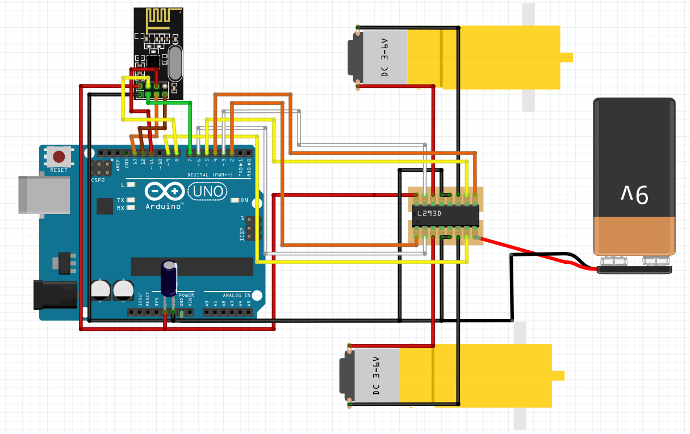

Pipe Viper
Compact inspection robot designed for confined environments.

Overview
Pipe Viper is an inspection robot designed to navigate tight spaces and provide real-time visual feedback. The system was built to operate under physical constraints while maintaining reliability and functionality through integrated electrical and embedded subsystems.
Objectives Demonstrated
Objective 3: Demonstrate embedded system design skills, including, but not limited to, microcontroller selection, schematic design, printed circuit board layout, design for electromagnetic compatibility and design for manufacturing.
Pipe Viper meets this objective because it required embedded and electrical design in a robotic system with strict physical limitations. Electrical planning, subsystem integration, and component arrangement all had to be handled in a way that supported the overall build and its intended inspection use.
Objective 4: Apply knowledge of transducers, actuators and simultaneous hardware and software development in the design of an embedded system.
Pipe Viper meets this objective by combining sensors, camera hardware, electrical integration, and embedded control into a working inspection robot. The design required understanding how hardware inputs and outputs interact with system behavior, which reflects simultaneous development across hardware and software.
Objective 6: Implement and evaluate algorithms and methods enabling autonomy in a mobile robot
Pipe Viper meets this objective by using sensing, control logic, and subsystem coordination to support effective robot behavior in a physical environment. Although it is not presented as a fully autonomous platform, the design still reflects methods that contribute to autonomy-oriented robotic operation by enabling the robot to function purposefully within real spatial constraints.
Evidence of Functionality
The project image provides visible evidence of the completed inspection robot platform. Combined with demonstration media and code or source materials, it helps verify that the system was implemented as a functioning robotic build rather than only a design concept.
Key Contributions
- Served as Lead Electrical Engineer
- Designed and implemented electrical systems
- Integrated camera and power systems
- Ensured reliability in constrained environments